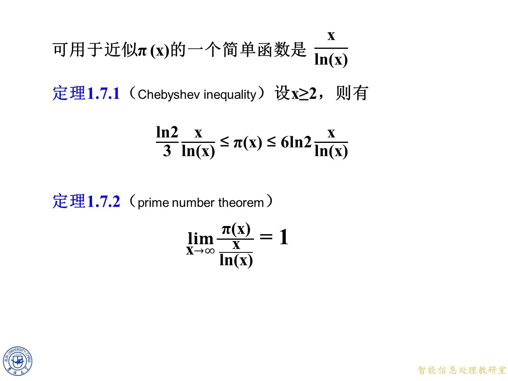

本课是第一章的收尾部分，讲两件事：一是素数在整数中的分布规律与两个刻画分布的定理（切比雪夫不等式与素数定理），二是高斯函数（取整函数）在阶乘标准分解中的应用，用来求阶乘中素因数的指数。前者建立在第一章前面整除与素数概念之上，后者直接服务于上一节的算术基本定理，并为第二章同余的学习做铺垫。学完本课，就能回答"素数到底有多少、多密"以及"1000 的阶乘末尾有多少个零"这类问题。
素数分布、计数函数与素数定理
◆ p.582-583 ｜一、素数的分布的特点
p.582 是 1.7 节"素数定理"的节标题页，为过渡页；实质内容在 p.583。这一页用实验数据指出素数分布的两个特点。
第一个特点：越往后素数越稀。课件给出的数据是：1 到 1000 之间有 168 个素数；1000 到 2000 之间有 135 个；2000 到 3000 之间有 127 个；3000 到 4000 之间有 120 个；4000 到 5000 之间有 119 个。每个同样长的千长区间里素数在减少，说明素数不是均匀撒在整数上的，而是总体越来越稀疏。
课件接着给出一个能构造出任意长连续合数的公式：下面 n n n
( n + 1 ) ! + 2 , ( n + 1 ) ! + 3 , ( n + 1 ) ! + 4 , … , ( n + 1 ) ! + n , ( n + 1 ) ! + n + 1. (n+1)!+2,\ (n+1)!+3,\ (n+1)!+4,\ \ldots,\ (n+1)!+n,\ (n+1)!+n+1. ( n + 1 )! + 2 , ( n + 1 )! + 3 , ( n + 1 )! + 4 , … , ( n + 1 )! + n , ( n + 1 )! + n + 1.
道理是这样的：对 2 ≤ k ≤ n + 1 2\le k\le n+1 2 ≤ k ≤ n + 1 ( n + 1 ) ! (n+1)! ( n + 1 )! k k k k k k 2 , 3 , … , n + 1 2,3,\ldots,n+1 2 , 3 , … , n + 1 ( n + 1 ) ! (n+1)! ( n + 1 )! ( n + 1 ) ! + k (n+1)!+k ( n + 1 )! + k k k k ( n + 1 ) ! + k > k (n+1)!+k>k ( n + 1 )! + k > k n n n
第二个特点：分布极不规则。在更小的百长区间里：1-100 有 25 个素数，100-200 有 21 个，200-300 有 16 个，300-400 有 16 个，400-500 有 17 个，500-600 有 14 个。注意 400-500 的 17 比 300-400 的 16 多——虽然总体趋势是变稀，但局部会有反复，并不是严格单调减少的。
◆ p.584 ｜素数计数函数 π ( x ) \pi(x) π ( x )
要定量描述"多稀"，需要一个计数工具。设 π ( x ) \pi(x) π ( x ) x x x
π ( x ) = ∑ p ≤ x 1 , \pi(x)=\sum_{p\le x}1, π ( x ) = p ≤ x ∑ 1 ,
也就是对所有不超过 x x x π ( x ) \pi(x) π ( x )
x x x 2
10
50
100
1000
10 4 10^4 1 0 4 10 5 10^5 1 0 5 10 6 10^6 1 0 6 10 7 10^7 1 0 7 10 8 10^8 1 0 8
π ( x ) \pi(x) π ( x ) 1
4
15
25
168
1229
9592
78498
664579
5761455
逐项解读：π ( 2 ) = 1 \pi(2)=1 π ( 2 ) = 1 π ( 10 ) = 4 \pi(10)=4 π ( 10 ) = 4 π ( 100 ) = 25 \pi(100)=25 π ( 100 ) = 25 10 8 10^8 1 0 8 π ( 10 8 ) / 10 8 \pi(10^8)/10^8 π ( 1 0 8 ) /1 0 8 π \pi π
◆ p.585 ｜π ( x ) \pi(x) π ( x )
课件画出 x x x π ( x ) \pi(x) π ( x ) x x x π ( x ) \pi(x) π ( x )
◆ p.586 ｜定理 1.7.1（Chebyshev 不等式）与定理 1.7.2（素数定理）
可用一个简单函数来近似 π ( x ) \pi(x) π ( x ) x / ln ( x ) x/\ln(x) x / ln ( x ) ln \ln ln
定理 1.7.1（Chebyshev 不等式）：设 x ≥ 2 x\ge 2 x ≥ 2
ln 2 3 ⋅ x ln ( x ) ≤ π ( x ) ≤ 6 ln 2 ⋅ x ln ( x ) . \frac{\ln 2}{3}\cdot\frac{x}{\ln(x)}\le \pi(x)\le 6\ln 2\cdot\frac{x}{\ln(x)}. 3 ln 2 ⋅ ln ( x ) x ≤ π ( x ) ≤ 6 ln 2 ⋅ ln ( x ) x .
两个常数分别为 ln 2 / 3 ≈ 0.2310 \ln 2/3\approx 0.2310 ln 2/3 ≈ 0.2310 6 ln 2 ≈ 4.1589 6\ln 2\approx 4.1589 6 ln 2 ≈ 4.1589 π ( x ) \pi(x) π ( x ) x / ln x x/\ln x x / ln x x / ln x x/\ln x x / ln x x = 100 x=100 x = 100 5.02 5.02 5.02 90.31 90.31 90.31 π ( 100 ) = 25 \pi(100)=25 π ( 100 ) = 25
定理 1.7.2（素数定理，prime number theorem）：
lim x → ∞ π ( x ) x / ln ( x ) = 1. \lim_{x\to\infty}\frac{\pi(x)}{x/\ln(x)}=1. x → ∞ lim x / ln ( x ) π ( x ) = 1.
它比切比雪夫不等式强得多：不仅差常数倍，连常数都是 1。含义是 x x x x / ln x x/\ln x x / ln x π ( x ) \pi(x) π ( x ) 相对误差 趋于零。注意两点：一是这是渐近结论，对具体某个 x x x 10 6 10^6 1 0 6 π ( 10 6 ) = 78498 \pi(10^6)=78498 π ( 1 0 6 ) = 78498 10 6 / ln 10 6 ≈ 72382 10^6/\ln 10^6\approx 72382 1 0 6 / ln 1 0 6 ≈ 72382
◆ p.587 ｜比值 π ( x ) / ( x / ln x ) \pi(x)/(x/\ln x) π ( x ) / ( x / ln x )
课件画出 x x x π ( x ) / ( x / ln ( x ) ) \pi(x)/(x/\ln(x)) π ( x ) / ( x / ln ( x )) x x x x x x 10 4 10^4 1 0 4
◆ p.588-589 ｜作业
p.588 为过渡页，实质内容在 p.589。作业：教材习题 1.8 中第（32）题——运用欧几里得除法求整数 s s s t t t s a + t b = ( a , b ) sa+tb=(a,b) s a + t b = ( a , b ) a = 1613 a=1613 a = 1613 b = 3589 b=3589 b = 3589
思路：先用辗转相除把 ( 1613 , 3589 ) (1613,3589) ( 1613 , 3589 )
3589 = 2 × 1613 + 363 , 3589=2\times 1613+363, 3589 = 2 × 1613 + 363 , 1613 = 4 × 363 + 161 , 1613=4\times 363+161, 1613 = 4 × 363 + 161 , 363 = 2 × 161 + 41 , 363=2\times 161+41, 363 = 2 × 161 + 41 , 161 = 3 × 41 + 38 , 161=3\times 41+38, 161 = 3 × 41 + 38 , 41 = 1 × 38 + 3 , 41=1\times 38+3, 41 = 1 × 38 + 3 , 38 = 12 × 3 + 2 , 38=12\times 3+2, 38 = 12 × 3 + 2 , 3 = 1 × 2 + 1 , 3=1\times 2+1, 3 = 1 × 2 + 1 , 2 = 2 × 1 + 0. 2=2\times 1+0. 2 = 2 × 1 + 0.
最后一个非零余数是 1，所以 ( 1613 , 3589 ) = 1 (1613,3589)=1 ( 1613 , 3589 ) = 1 1 = 3 − 1 × 2 1=3-1\times 2 1 = 3 − 1 × 2
1 = 3 − 2 = 3 − ( 38 − 12 × 3 ) = 13 × 3 − 38 1=3-2=3-(38-12\times3)=13\times3-38 1 = 3 − 2 = 3 − ( 38 − 12 × 3 ) = 13 × 3 − 38
13 × 3 − 38 = 13 ( 41 − 38 ) − 38 = 13 × 41 − 14 × 38 13\times3-38=13(41-38)-38=13\times41-14\times38 13 × 3 − 38 = 13 ( 41 − 38 ) − 38 = 13 × 41 − 14 × 38
13 × 41 − 14 × 38 = 13 × 41 − 14 ( 161 − 3 × 41 ) = 55 × 41 − 14 × 161 13\times41-14\times38=13\times41-14(161-3\times41)=55\times41-14\times161 13 × 41 − 14 × 38 = 13 × 41 − 14 ( 161 − 3 × 41 ) = 55 × 41 − 14 × 161
55 × 41 − 14 × 161 = 55 ( 363 − 2 × 161 ) − 14 × 161 = 55 × 363 − 124 × 161 55\times41-14\times161=55(363-2\times161)-14\times161=55\times363-124\times161 55 × 41 − 14 × 161 = 55 ( 363 − 2 × 161 ) − 14 × 161 = 55 × 363 − 124 × 161
55 × 363 − 124 × 161 = 55 × 363 − 124 ( 1613 − 4 × 363 ) = − 124 × 1613 + 551 × 363 55\times363-124\times161=55\times363-124(1613-4\times363)=-124\times1613+551\times363 55 × 363 − 124 × 161 = 55 × 363 − 124 ( 1613 − 4 × 363 ) = − 124 × 1613 + 551 × 363
− 124 × 1613 + 551 × 363 = − 124 × 1613 + 551 ( 3589 − 2 × 1613 ) = − 1226 × 1613 + 551 × 3589 -124\times1613+551\times363=-124\times1613+551(3589-2\times1613)=-1226\times1613+551\times3589 − 124 × 1613 + 551 × 363 = − 124 × 1613 + 551 ( 3589 − 2 × 1613 ) = − 1226 × 1613 + 551 × 3589
答案：s = − 1226 s=-1226 s = − 1226 t = 551 t=551 t = 551 − 1226 × 1613 + 551 × 3589 = 1 -1226\times1613+551\times3589=1 − 1226 × 1613 + 551 × 3589 = 1 k k k s = − 1226 + 3589 k s=-1226+3589k s = − 1226 + 3589 k t = 551 − 1613 k t=551-1613k t = 551 − 1613 k
拓展 （课件外补充）：作业里 s a + t b = ( a , b ) sa+tb=(a,b) s a + t b = ( a , b ) a , b a,b a , b 1 / ln x 1/\ln x 1/ ln x

课件原图 · 9月11日授课（2） · 第 586 页 查看前后已收录原页 →